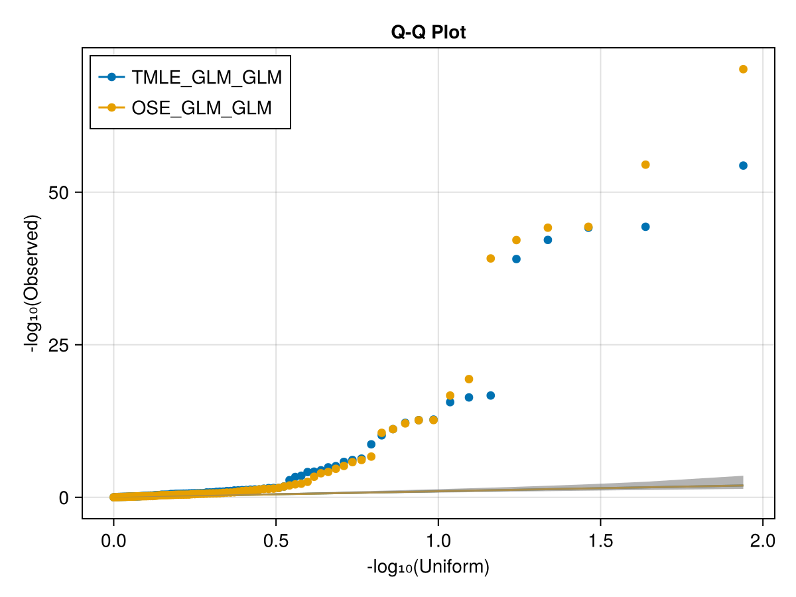

Understanding TarGene's Outputs
The successful completion of the workflow will produce the following files in the output directory OUTDIR (default: results):
QQ.png: A Quantile-Quantile summary plot.results.summary.yaml: A summary statistics file of your results.results.hdf5: A file containing the complete description of estimands and associated estimates in HDF5 format.svp.hdf5: An optional file containing Sieve Variance Plateau corrected variance estimates (see Correcting for population relatedness (Experimental)).
If you come from the world of linear models where a single $\beta$ and p-value is output for each variant, TarGene's output may seem difficult to read at first. In this section we explain how they are structured and how to work with them.
The crucial difference, is that TarGene estimates the effect of change. As such there is one estimate ($\hat{\beta}$) per genotype change. Consider a single variant with genotypes CC, CT and TT. TarGene estimates non-redundant changes, in this case it would be both $CC \rightarrow CT$ and $CT \rightarrow TT$. For each of these changes, there is thus an effect size, e.g. $\hat{\beta}_{CC \rightarrow CT}$, and a p-value, e.g. $\text{pval}_{\hat{\beta}_{CC \rightarrow CT}}$.
However, it is often more intuitive to think of the "full" effect of a variant on an outcome. This is simply defined as the joint effect of all changes, i.e., $[\beta_{CC \rightarrow CT}, \beta_{CT \rightarrow TT}]$. This effect is nonzero if it is different from $[0, 0]$. The multivariate central limit theorem tells us that this joint effect is a multivariate normal and a single p-value can be obtained for it.
Finally, estimation can only be accurate for genotypes that are not too rare. This is known as the positivity condition, and is similar to the traditional minor allele frequency threshold used in GWAS. In TarGene this is defined by the POSITIVITY_CONSTRAINT (default: 0.01) parameter, for which a default value was chosen based on simulation studies. In TarGene, only changes that satisfy the positivity constraint are considered for estimation. In the example above, if the genotypes frequencies were 0.745, 0.25 and 0.005 respectively, only the $CC \rightarrow CT$ would satisfy the constraint, and only this change would be estimated.
We have discussed single variant effects, but interactions are defined exactly in the same way. The difference is that they are defined by two or more variants, each of which with possibly multiple genotype changes. Consider two variants $V_1$ and $V_2$, the interaction between $V_1$ and $V_2$ is defined by the following genotype changes:
- $V_1: CC \rightarrow CT, V_2: AA \rightarrow AG$
- $V_1: CT \rightarrow TT, V_2: AA \rightarrow AG$
- $V_1: CC \rightarrow CT, V_2: AG \rightarrow GG$
- $V_1: CT \rightarrow TT, V_2: AG \rightarrow GG$
The QQ.png
{kind=link}
If you understood the previous section, now you know there is one p-value per genetic effect, even if this effect has multiple components. These p-values can be plotted against the p-values that would be obtained if null hypothesis was true in a QQ plot. Because a TarGene run may comprise multiple estimators, there can be multiple overlapping QQ plots, one for each estimator.

The results.summary.yaml
The results.summary.yaml is a summary file which probably contains all the information you need. It provides a list of estimates corresponding to your run specification. The following example illustrates the format.
- EFFECT_TYPE: "ATE"
OUTCOME: hypothyroidism/myxoedema
TREATMENTS:
- rs238411180: "CC => CT"
- rs238411180: "CT => TT"
OSE:
PVALUE: 0.5270550612752147
COMPONENTS:
- PVALUE: 3.1691860303379483e-24
EFFECT_SIZE: 0.03549905917106507
- PVALUE: 0.011507985165943658
EFFECT_SIZE: -0.0011000033630272567
- EFFECT_TYPE: "AIE"
OUTCOME: C50-C50 Malignant neoplasm of breast
TREATMENTS:
- rs3502414: "TT => CT"
Cheese intake: "3 => 2"
- rs3502414: "TT => CT"
Cheese intake: "2 => 1"
- rs3502414: "TT => CT"
Cheese intake: "1 => 4"
OSE:
PVALUE: 0.6007356699283757
COMPONENTS:
- PVALUE: 3.1691860303379483e-24
EFFECT_SIZE: 0.03549905917106507
- PVALUE: 0.011507985165943658
EFFECT_SIZE: -0.0011000033630272567
- PVALUE: 0.98
EFFECT_SIZE: 0.09190645731696134
- EFFECT_TYPE: "ATE"
OUTCOME: L50-L54 Urticaria and erythema
TREATMENTS:
rs117913124: "GG => GA"
rs53453: "GG => GA"
OSE:
PVALUE: .NaN
EFFECT_SIZE: "Failed"The first estimate corresponds to the Average Treatment Effect (ATE) of rs238411180 on hypothyroidism/myxoedema. The TREATMENTS section contains all variables whose effect on outcome is estimated. In this case, the two genotype changes are presented, indicating that all genotypes passed the positivity constraint. Then one section per estimator is reported (see Specifying a Targeted Estimator). In this case a single estimator, the One-Step Estimator, corresponding to the OSE section. The joint p-value of the effect is provided in PVALUE together with the list of changes' effect sizes in COMPONENTS. Each component actually contain both an effect size EFFECT_SIZE and a p-value PVALUE corresponding to the single change's test.
The second estimate corresponds to the Average Interaction Effect (AIE) of rs3502414 and Cheese intake on C50-C50 Malignant neoplasm of breast. Only the $TT \rightarrow CT$ change is presented, indicating that the other change did not pass the positivity constraint. The other sections are similar to the previous estimate.
Finally, the third element corresponds to the Average Treatment Effect of two variants (rs117913124, rs53453) on L50-L54 Urticaria and erythema. In this case, only a single change was requested by the user. We can see that because the TREATMENTS section is not a list. Also, in some cases, estimation can fail as reported here.
Together, these three examples should help you get started with post processing your results!
The results.hdf5 (Advanced)
In some cases, you may want to perform additional operations on your estimates. For example, if you would like to compute differential allelic effects corresponding to the following question: are the $\beta_{CC \rightarrow CT}$ and $\beta_{CT \rightarrow TT}$ identical? This can be done using the comprehensive results.hdf5 file, which retains all the estimation information (e.g., covariance matrices).
This file contains a DataFrame which can be loaded within a Julia session for instance. This DataFrame contains one column per estimator for the TarGene run (only OSE in the example above). Each element of a column is an estimation result corresponding to a given genetic effect (there were 2 in the above example). These are objects that are defined within the TMLE.jl package and it is recommended to use it for downstream analysis. The DataFrame also contains an additional p-value column for each of these estimators. In the previous example there would be a total of only 2 columns: [OSE, OSE_PVALUE].
The svp.hdf5 (Experimental)
This file is similar to the results.hdf5 except that the standard errors are computed with a corrected variance estimator.